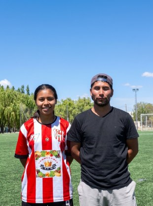

En el aula de la ESRN Rural Virtual, compartiendo unos mates, entrevistamos a nuestra compañera Anahir Carus, jugadora de la Selección de Río Negro, y a su entrenador, Lucas Carus, quienes nos contaron cómo viven el fútbol desde nuestro pueblo, a más de cien kilómetros de la ruta.

La palabra de Anahir Carus
¿Cómo empezaste en el fútbol y dónde entrenás?
«Empecé a los 4 o 5 años jugando con mis hermanos. En verano entrenamos en la cancha de tierra y en invierno, por el frío, vamos al gimnasio. Jugué en equipos de Bariloche (Pincharata) y Comallo (Las Monitas).»
¿Qué significó llegar a la Selección de Río Negro?
«Fue el momento más importante. Me sentí muy feliz y sentí un orgullo enorme porque, al ser un pueblo chico y llegar a algo tan grande, te da mucho orgullo. Ayer mismo me volvieron a convocar.»
¿Cómo resuelven los viajes y el estudio?
«La Comisión de Fomento nos lleva con su camioneta y entre todos juntamos para la comida. A veces se complica estudiar cuando viajo porque paso todo el día entrenando, pero trato de organizarme.»
¿Cuál es tu sueño y qué les decís a las chicas de Mencué?
«Me gustaría llegar a la Selección Argentina o jugar en un club a nivel nacional. A las chicas del pueblo les digo que entrenen y tengan confianza, que algo bueno siempre llega.»
El apoyo del entrenador: Lucas Carus
¿Cómo fue el crecimiento de Anahir desde que empezó con usted?
«Entreno hace 5 o 6 años y Anahir empezó conmigo a los 10. Antes era muy chiquita y quería gambetear a todos; hoy creció en lo físico, juega más de pase, prueba al arco y marca muy bien. Es una jugadora completa.»

¿Qué dificultades hay en la zona rural y qué se necesita para crecer?
«Hoy perjudica mucho el uso del celular y, para salir a competir, nos complican los caminos y la nieve en invierno. Lo fundamental es el apoyo de los padres y la familia, además de tiempo, dedicación y trabajo.»
¿Qué representa este logro y qué mensaje les deja a los jóvenes?
«Es un orgullo gigante representar a Mencué y demostrar que, aunque seamos un pueblo chico, podemos llegar lejos. A las jugadoras les pido que entrenen, que le metan pilas al estudio, que descansen bien y que la sigan luchando.»
Redacción y entrevistas: estudiantes de 1.º, 2.º y 3.º año · ESRN Rural Virtual, Anexo 11 Mencué